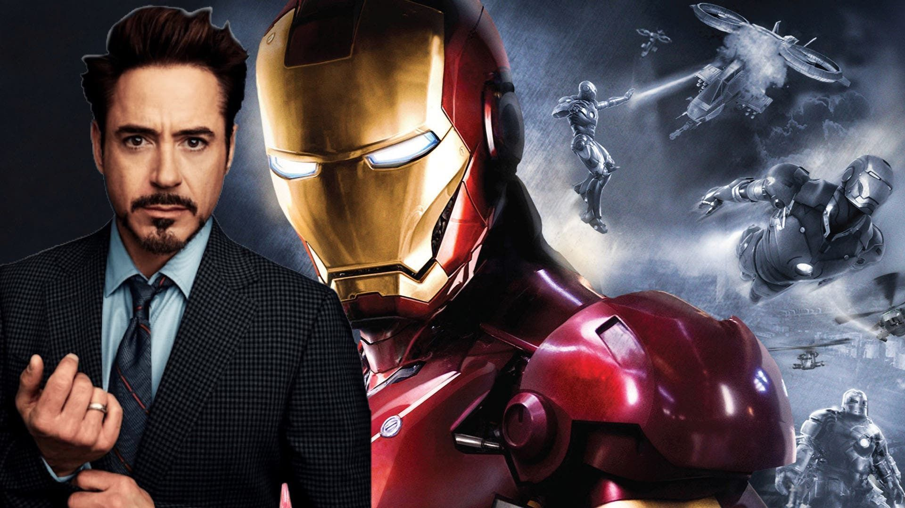

Un multimillonario, empresario e ingeniero, Tony Stark sufre una lesión en el pecho durante
Iron Man ha hecho apariciones menores en series animadas como:
https://www.marvel.com/characters/iron-man-tony-stark

un secuestro en el que sus captores tratan de obligarlo a construir un arma de destrucción
masiva. Él crea en su lugar una poderosa armadura para salvar su
vida y escapar de su cautiverio. Luego utiliza la armadura para proteger al mundo como Iron Man. A través de su
corporación-Industrias Stark-Tony ha creado muchas armas militares, algunas de las
cuales, junto con otros sispositivos tecnológicos de su invención, se han integrado en su
armadura, ayudándolo a luchar contra el crimen.